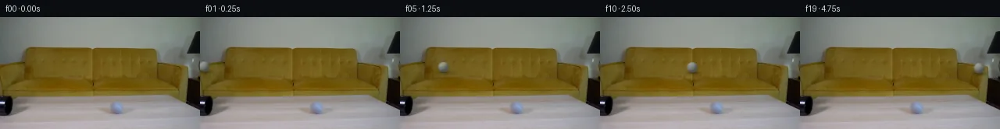
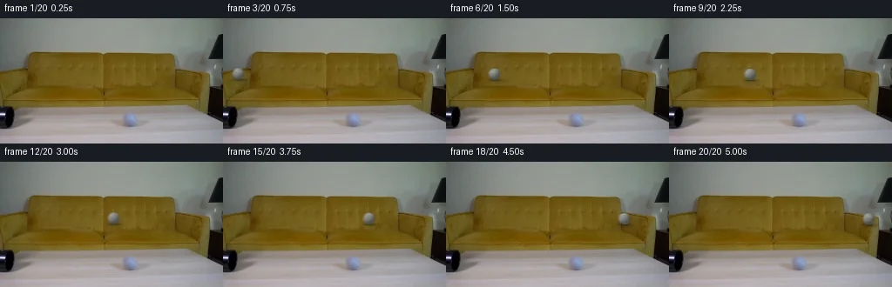
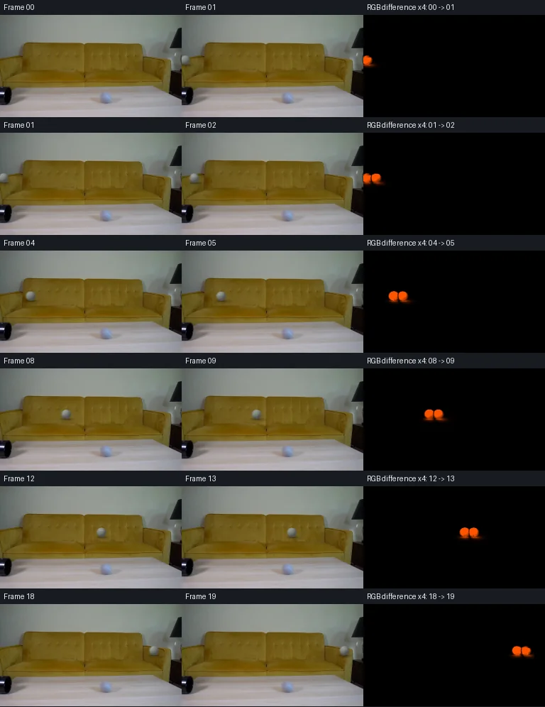

V0 · 初版 · 最终提交
![]()
Observable Generation Trace
把最终像素视频、Harness 冻结的每轮候选、真实工具事件和 Agent 自述放在同一页。可观测证据与模型自述分开标记，避免把“模型说它检查过”误当成真实工具调用。
![首帧]()
Static locked-off single-shot with fixed frame throughout filmed with constant framerate in real-time. The scene shows a realistic scientific demonstration. The scene only contains the described setup and actions. A light wood coffee table in the foreground with a black pipe on the left end of the table. The grey tennis ball rolls out of the pipe over the entire table towards the right.
首帧显示在左侧播放器初始画面。Track 权限、隔离和 tensor 一致性来自 run manifest，而不是 METHOD.md。
默认勾选初版和最终版；可选其他版本一起同步播放。仅检查图更新的连续重复快照已合并，回退旧视频仍保留为一次修订。
Observable events
来源：events.jsonl + run manifest
此 Track 禁止读取输出图片。逐轮预览由外部 Harness 自动冻结，只用于事后审计，生成 Agent 当时看不到这些页面。
Frozen candidates
每张图来自该 round 的真实 00 / 01 / 05 / 10 / 19 帧

pixels 6c7a3923ffccabc3 · code 141bd31e962f5aaf
--- previous/generate.py +++ current/generate.py @@ -0,0 +1,201 @@ +"""Local analytical pixel continuation of first_frame.png. + +No external renderer/model/reference is used. The background is never rebuilt. +""" +from pathlib import Path +import json +import numpy as np +from PIL import Image, ImageDraw +from artifact_io import save + +ROOT = Path(__file__).resolve().parent +WIDTH, HEIGHT, COUNT, FPS = 256, 144, 20, 4 +RADIUS = 6.7 +SUPERSAMPLE = 4 +EXPOSURE_SECONDS = 0.04 +ROLL_AXIS = np.array([0.0, 0.35, np.sqrt(1.0 - 0.35**2)]) +LIGHT = np.array([-0.45, -0.66, 0.60]) +LIGHT /= np.linalg.norm(LIGHT) + + +def center_x(t): + return -8.0 + 50.8 * t - 0.2 * t * t + + +def contact_y(x): + return 70.0 + 0.009 * x + + +def inverse_roll(normals, angle): + """Rodrigues rotation, retaining the same felt pattern on the sphere.""" + c, s = np.cos(angle), np.sin(angle) + dot = np.sum(normals * ROLL_AXIS, axis=-1, keepdims=True) + return (normals * c - np.cross(ROLL_AXIS, normals) * s + + ROLL_AXIS * dot * (1.0 - c)) + + +def render_exposure_sample(source, t, bounds): + x0, y0, x1, y1 = bounds + scale = SUPERSAMPLE + # Sample inside each original pixel, keeping the photograph registered. + xs = x0 + (np.arange((x1 - x0) * scale) + 0.5) / scale - 0.5 + ys = y0 + (np.arange((y1 - y0) * scale) + 0.5) / scale - 0.5 + xx, yy = np.meshgrid(xs, ys) + background = np.repeat(np.repeat(source[y0:y1, x0:x1], scale, axis=0), + scale, axis=1).astype(np.float64) + + cx = center_x(t) + foot = contact_y(cx) + cy = foot - RADIUS + + # Only wooden surface pixels receive the shadow. The unambiguous warm + # color criterion avoids changing the gray background, rim, or legs. + table = ((background[..., 0] - background[..., 2] > 31) + & (background[..., 1] - background[..., 2] > 23) + & (yy >= 59) & (yy <= 91)) + cast = np.exp(-0.5 * (((xx - cx - 2.5) / 6.5)**2 + + ((yy - foot - 0.6) / 2.05)**2)) + contact = np.exp(-0.5 * (((xx - cx) / 4.1)**2 + + ((yy - foot + 0.05) / 0.74)**2)) + shadow = (0.18 * cast + 0.36 * contact) * table + shadow[shadow < 0.002] = 0 + background *= 1.0 - shadow[..., None] + + u, v = (xx - cx) / RADIUS, (yy - cy) / RADIUS + rr = u*u + v*v + radial_distance = np.sqrt(rr) * RADIUS + # Fractional felt coverage, including a very narrow fuzzy silhouette. + alpha = np.clip((RADIUS + 0.22 - radial_distance) / 0.44, 0, 1) + nz = np.sqrt(np.maximum(0.0, 1.0 - rr)) + normals = np.stack([u, v, nz], axis=-1) + normals /= np.maximum(np.linalg.norm(normals, axis=-1, keepdims=True), 1e-6) + angle = (cx - center_x(0)) / RADIUS + q = inverse_roll(normals, angle + 0.37) + + lambert = np.maximum(0, np.sum(normals * LIGHT, axis=-1)) + illumination = 0.52 + 0.47 * lambert + felt = (np.sin(73*q[..., 0] + 29*q[..., 1] + 41*q[..., 2]) + * np.sin(37*q[..., 0] - 83*q[..., 1] + 19*q[..., 2]) + + 0.4*np.sin(143*q[..., 0] + 113*q[..., 1] - 67*q[..., 2])) + gray = np.array([150.0, 154.0, 148.0]) + color = gray * illumination[..., None] + 2.6 * felt[..., None] + + # A continuous wavy closed seam in ball coordinates. Both the seam and + # fine felt texture follow the same physical rolling rotation. + longitude = np.arctan2(q[..., 1], q[..., 0]) + field = q[..., 2] - 0.55 * np.sin(2.0 * longitude) + slope = np.sqrt(1 + (1.1 * np.cos(2.0 * longitude))**2 … diff truncated; 114 more lines …
pixels 6c7a3923ffccabc3 · code 5f8e69614aeebbdc
--- previous/generate.py
+++ current/generate.py
@@ -3,7 +3,10 @@
No external renderer/model/reference is used. The background is never rebuilt.
"""
from pathlib import Path
+import base64
import json
+import re
+import shutil
import numpy as np
from PIL import Image, ImageDraw
from artifact_io import save
@@ -140,6 +143,25 @@
assert tensor.dtype == np.uint32
assert np.all(tensor <= 0xFFFFFF)
assert np.array_equal(frames[0], source)
+ assert (ROOT / 'first_frame.png').read_bytes() == (ROOT / 'frames/00.png').read_bytes()
+ # Verify the standalone player's actual first frame and every delta packet.
+ html = (ROOT / 'index.html').read_text()
+ match = re.search(r'const DATA=(.*?);\nfunction unpack', html)
+ assert match and '__DATA__' not in html
+ player_data = json.loads(match.group(1))
+ player_frame = np.frombuffer(base64.b64decode(player_data['first']),
+ dtype='<u4').copy()
+ assert np.array_equal(player_frame, tensor[:, :, 0].reshape(-1))
+ assert len(player_data['deltas']) == COUNT - 1
+ for f, packet in enumerate(player_data['deltas'], 1):
+ patch = np.frombuffer(base64.b64decode(packet), dtype='<u4')
+ i = 0
+ while i < len(patch):
+ start, count = int(patch[i]), int(patch[i+1])
+ player_frame[start:start+count] = patch[i+2:i+2+count]
+ i += count + 2
+ assert i == len(patch)
+ assert np.array_equal(player_frame, tensor[:, :, f].reshape(-1)), f
metrics = []
for f in range(COUNT):
png = Image.open(ROOT / 'frames' / f'{f:02d}.png')
@@ -176,7 +198,9 @@
'duration_seconds': COUNT/FPS,
'tensor_shape': list(tensor.shape), 'tensor_dtype': str(tensor.dtype),
'packing': '0xRRGGBB', 'first_frame_exact': True,
+ 'first_frame_file_exact': True,
'all_pngs_equal_tensor': True, 'camera_background_fixed': True,
+ 'html_frames_equal_tensor': True,
'inspection_method': 'local code and numeric RGB checks; no image viewing',
'frames': metrics}
(ROOT / '.tmp' / 'verification.json').write_text(json.dumps(report, indent=2) + '\n')
@@ -193,6 +217,8 @@
frames = np.stack([source.copy()] + [render_frame(source, f/FPS)
for f in range(1, COUNT)])
save(frames, ROOT)
+ # Preserve both decoded pixels and the source PNG's exact bytes.
+ shutil.copyfile(ROOT / 'first_frame.png', ROOT / 'frames' / '00.png')
create_transition_check(frames)
verify(frames)
Final visual checks
Harness 保存的最终产物


Agent claims
以下文字由生成 Agent 撰写，不等同于工具证据
Inspection used local Pillow/NumPy RGB arrays and numeric color/component measurements. No image Read/View tool was used.
first_frame.png is RGB, 256 pixels wide by 144 pixels high.Produce 20 frames at 4 fps. Each frame represents a 0.25-second exposure slot; the sequence lasts 5 seconds, with state timestamps 0.00 through 4.75 seconds. Frame 00 is an exact copy of the source, with no editing. For subsequent frames, the ball emerges from the cropped left pipe location and rolls rightward. Its center is x=-8+50.8t-0.2t². This models weak, continuous rolling resistance; there is no pause, teleportation, bounce, or change to the setup.
Use a locally drawn, shaded gray sphere with felt texture and a rotating pale tennis seam. Set angular displacement from traveled distance divided by radius to make the ball roll without slipping. Use a compact contact shadow and a soft cast shadow, clipped to the measured tabletop color region. Average a short exposure and supersample the moving object for smooth edges at 256×144.
| Frame | Time (s) | Center x (px) | Event |
|---|---|---|---|
| 00 | 0.00 | -8.00 | Original frame; ball hidden outside left crop. |
| 01 | 0.25 | 4.69 | Ball emerges at the left table end. |
| 02 | 0.50 | 17.35 | Ball fully clear, moving right. |
| 03 | 0.75 | 29.99 | Continuous rolling and seam rotation. |
| 04 | 1.00 | 42.60 | Crosses the left tabletop. |
| 05 | 1.25 | 55.19 | Maintains surface contact. |
| 06 | 1.50 | 67.75 | Continuous rightward roll. |
| 07 | 1.75 | 80.29 | Crosses the first third. |
| 08 | 2.00 | 92.80 | Rotating felt surface. |
| 09 | 2.25 | 105.29 | Approaches the middle. |
| 10 | 2.50 | 117.75 | Rolls across the middle. |
| 11 | 2.75 | 130.19 | Leaves the middle. |
| 12 | 3.00 | 142.60 | Continuous rightward roll. |
| 13 | 3.25 | 154.99 | Crosses the right half. |
| 14 | 3.50 | 167.35 | Surface contact and moving shadow. |
| 15 | 3.75 | 179.69 | Crosses the last quarter. |
| 16 | 4.00 | 192.00 | Approaches the right table end. |
| 17 | 4.25 | 204.29 | Rolls through the rightmost section. |
| 18 | 4.50 | 216.55 | Near the end, still rolling. |
| 19 | 4.75 | 228.79 | Reaches the right end, still supported. |
Check the 20 RGB PNG dimensions, exact first-frame equality, the uint32 tensor shape (144,256,20) and packing 0xRRGGBB, and equality of every PNG with its tensor slice. Measure per-transition pixel changes, moving-object bounds, monotonic trajectory, support points, and unchanged pixels outside the moving footprint. Create both requested inspection sheets, a standalone HTML player, and an honest method report. Inspection sheets are artifacts; their creation does not constitute visual review.
The result is a 20-frame RGB continuation at 256×144 and 4 fps, lasting 5 seconds. The gray tennis ball rolls from the left crop across the wooden table to its right end. The original photograph supplies the fixed background and all stationary setup pixels.
The only scene inputs were prompt.txt and first_frame.png. The task's local
generation rules and output helper/template were also read. All work stayed in
this workspace, with temporary diagnostic data in .tmp/.
The source was inspected with local Python, Pillow, NumPy, numeric RGB samples,
and connected-component measurements. No image Read/View tool was used. Neither
the source nor the generated inspection sheets received visual review.
OBSERVATION.md was written before the generation code and records the scene
measurements, uncertainty, and all 20 planned events.
The wooden surface is numerically identifiable, but a distinct ball or black pipe mouth at the left table end is not. The continuation assumes that the initial ball and the left pipe mouth are outside the left crop. This is a scene interpretation rather than a measured source feature. It preserves the photographed setup and adds only the moving ball and its shadows. The model does not establish what the source's upper-right dark component represents.
generate.py uses local analytic sphere shading and alpha compositing, with
NumPy array operations and Pillow image encoding. No external model, engine,
reference, mask, network resource, or subagent was used. The ball is synthesized
from mathematical geometry; it is not extracted from another picture.
x(t) = -8 + 50.8t - 0.2t², with t in seconds. The small constant deceleration
is a rolling-resistance approximation in image coordinates. Speed decreases
from 50.8 to 48.9 pixels/second, and remains positive throughout.contact_y = 70 + 0.009x, with projected ball center
center_y = contact_y - 6.7. The last center is (228.7875,65.3591), so the
ball reaches the right end while staying on the table. No falling action is
introduced after the described tabletop traverse.Frame states are sampled at 0.00,0.25,…,4.75 seconds and displayed for 0.25 seconds each. The initial offscreen center makes frame 00 compatible with the unmodified source. Later frames show continuous rightward travel without a stop or bounce.
generate.py: reproducible local generation and verification code.pixels.npz: key pixels, uint32 tensor shaped (144,256,20), packed 0xRRGGBB.frames/00.png through frames/19.png: the 20 RGB frames.inspection.png: eight sampled frames in a contact sheet.transition_check.png: six pairs of consecutive frames with magnified RGB
differences, including the first and last transitions.index.html: self-contained 4 fps player with playback, seek, replay, and
loop controls. Its first frame and delta packets embed all animation pixels.OBSERVATION.md and METHOD.md: the plan, assumptions, and actual method..tmp/verification.json: numeric per-frame positions and change diagnostics.Run python generate.py from this workspace to regenerate the pixel outputs
and rerun their checks, using the provided artifact_io.py and
player_template.html for output serialization.
Verification passed after generation:
These are code and numeric RGB checks. The saved sheets are supplied for inspection; no visual review or browser playback review is claimed.